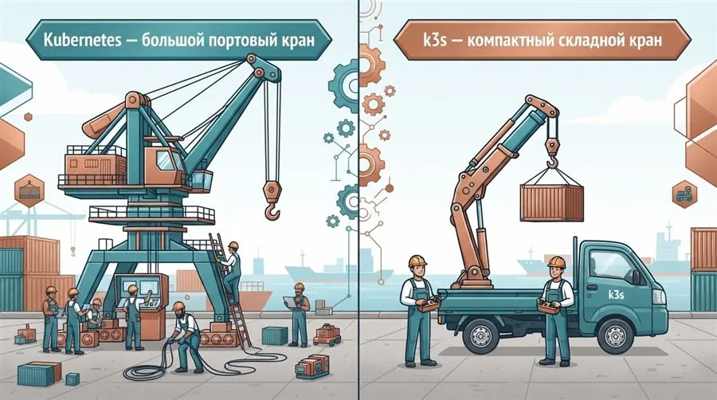
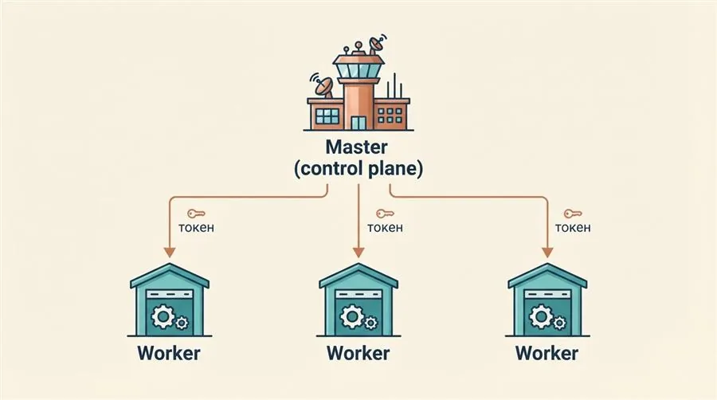
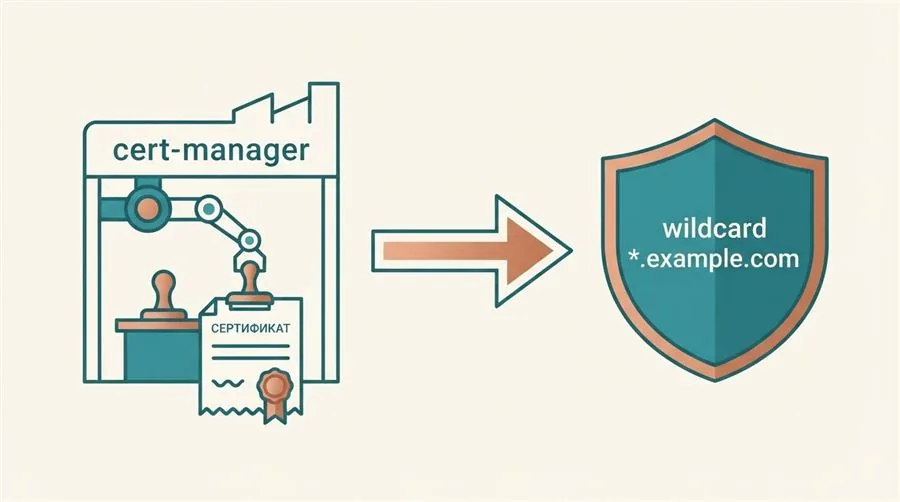
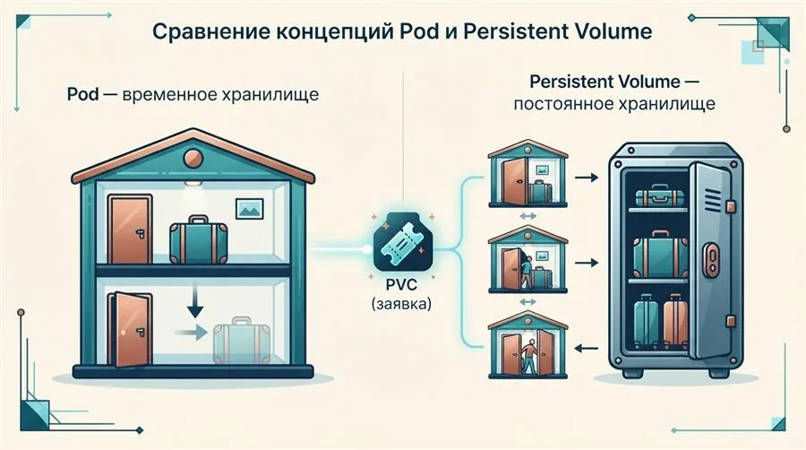
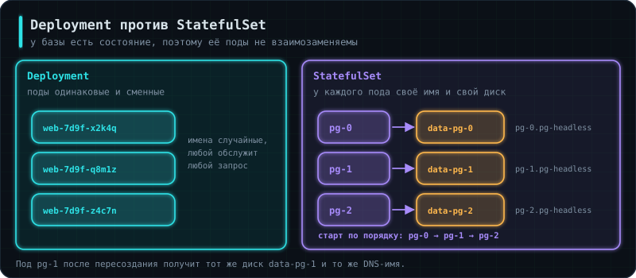
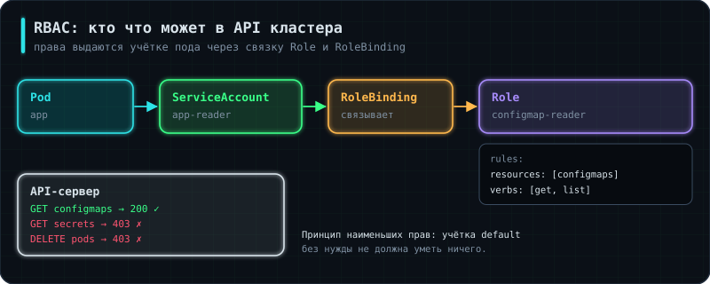

Задание 1 — кластер k3s
Подними k3s на трёх машинах (1 сервер, 2 агента), встроенный Traefik оставь.
Проверка: kubectl get nodes показывает три Ready-узла; поды распределяются по агентам.
В уроке 5.1 весь кластер жил на одной машине внутри minikube — удобно для обучения, но далеко от реальности. В этом уроке мы собираем настоящий многоузловой кластер k3s на нескольких VM, выпускаем ему настоящий HTTPS-сертификат, даём базе данных постоянное хранилище, которое переживёт перезапуск пода, и подключаем автоматический сбор метрик — именно так выглядит production-кластер, а не учебный стенд.
Аналогия: полноценный Kubernetes — как огромный портовый кран, для установки и обслуживания которого нужна целая бригада. k3s — компактный складной кран: поднимает по тем же законам физики, но помещается на обычный грузовик и собирается почти без посторонней помощи.
k3s — это официальный облегчённый дистрибутив Kubernetes от Rancher: тот же самый API и те же манифесты, что и в «большом» Kubernetes, но упакованные в один бинарник, с более лёгкими внутренними компонентами (например, SQLite вместо etcd по умолчанию для небольших кластеров). Именно поэтому его часто выбирают для обучения, edge-устройств и небольших продакшн-кластеров — он не «игрушечный», а полностью совместимый с реальным Kubernetes.

Аналогия: master — диспетчерская, которая знает, что происходит на всей стройке, кому какую задачу дать и как всё это учитывается; worker — сами строительные площадки, где реально кладут кирпичи (запускаются поды).
# на master-узле: поднимаем control plane,
# сразу отключаем встроенный Ingress Controller
curl -sfL https://get.k3s.io | sh -s - server --disable=traefik
# токен для присоединения worker-узлов
cat /var/lib/rancher/k3s/server/node-token
Master отвечает за «мозг» кластера: API-сервер, планировщик (какой под на какой узел поставить), контроллеры, отслеживающие состояние. Worker-узлы физически исполняют поды — именно на них расходуются CPU и память приложения.

Аналогия: выдать новому сотруднику пропуск (токен) и адрес головного офиса (адрес мастера), чтобы он мог явиться на смену и его сразу узнали как своего.
export NODE_TOKEN=<токен_с_мастера>
curl -sfL https://get.k3s.io | \
K3S_URL=https://<ip_мастера>:6443 \
K3S_TOKEN=$NODE_TOKEN sh -s - agent
# проверяем с мастера, что узел присоединился
kubectl get nodes
Каждый worker-узел запускается с адресом мастера (K3S_URL/--server) и токеном (K3S_TOKEN/--token) — это доказательство, что узел действительно имеет право присоединиться именно к этому кластеру, а не к случайному чужому.
Аналогия: k3s «из коробки» уже приходит со своей мебелью на ресепшене (Traefik) — если хочешь поставить свою, сначала нужно явно вынести старую, а не пытаться поставить новую поверх.
k3s по умолчанию устанавливает Traefik в роли Ingress Controller — для учебного кластера и для небольших боевых его вполне достаточно, и в этом курсе мы его оставляем. Traefik понимает и классические объекты Ingress, и новый Gateway API (§5).
Годами самым популярным контроллером был ingress-nginx, и в статьях и чужих кластерах он встречается на каждом шагу. Но в ноябре 2025 года Kubernetes объявил о его выводе из эксплуатации: с марта 2026 года проект больше не выпускает обновлений, в том числе исправлений уязвимостей. Уже работающие установки продолжают работать, но новые кластеры на нём не строят, а старые постепенно переводят на другие контроллеры (Traefik, HAProxy, NGINX Gateway Fabric, Envoy Gateway и др.) и на Gateway API. Выбор контроллера — не вопрос «правильно или нет»: важно, чтобы он поддерживался и был одинаковым во всех окружениях команды. Если всё же ставишь другой контроллер, встроенный Traefik отключают флагом --disable=traefik, чтобы два контроллера не спорили за один трафик.
Аналогия: Ingress — одна общая вывеска на входе, которую правят все подряд. Gateway API разделяет роли: администратор кластера отвечает за сам вход (Gateway), а команда приложения — только за свои маршруты (HTTPRoute).
Ingress умеет немногое, и всё сверх простого роутинга контроллеры добавляли своими аннотациями — у каждого своими. Gateway API — стандартная замена: те же возможности описаны полями, одинаковыми для всех контроллеров. Включаем его во встроенном Traefik:
# CRD Gateway API (в k3s их нет по умолчанию)
kubectl apply -f https://github.com/kubernetes-sigs/gateway-api/releases/download/v1.3.0/standard-install.yaml
# /var/lib/rancher/k3s/server/manifests/traefik-config.yaml — k3s подхватит сам
apiVersion: helm.cattle.io/v1
kind: HelmChartConfig
metadata:
name: traefik
namespace: kube-system
spec:
valuesContent: |-
providers:
kubernetesGateway:
enabled: true
Маршрут приложения тогда выглядит так:
apiVersion: gateway.networking.k8s.io/v1
kind: HTTPRoute
metadata:
name: shop
spec:
parentRefs:
- name: traefik-gateway # Gateway, который создал чарт Traefik
namespace: kube-system
hostnames: ["shop.example.com"]
rules:
- backendRefs:
- name: shop-api
port: 80
kubectl get gateway -A # вход и его адрес
kubectl get httproute # маршруты и их статус Accepted
Ingress никуда не делся и в курсе встречается дальше — его понимают все контроллеры, и его ещё много в живых кластерах. Но новые проекты всё чаще начинают сразу с Gateway API.
Аналогия: cert-manager — это автоматическая нотариальная контора внутри кластера: сама запрашивает печать (сертификат) у удостоверяющего центра, сама следит за сроком годности и сама переоформляет его заранее, без напоминаний со стороны человека.
apiVersion: cert-manager.io/v1
kind: ClusterIssuer
metadata:
name: letsencrypt-wildcard
spec:
acme:
server: https://acme-v02.api.letsencrypt.org/directory
email: you@example.com
privateKeySecretRef:
name: letsencrypt-wildcard-key
solvers:
- dns01:
cloudflare:
email: you@example.com
apiTokenSecretRef:
name: cloudflare-api-token
key: api-token
Почему именно dns01, а не более простой http01: http01-проверка доказывает владение доменом, размещая специальный файл по определённому URL на этом домене (http://домен/.well-known/acme-challenge/...) — но для wildcard-имени вроде *.example.com нет одного конкретного URL, который покрывал бы сразу все возможные поддомены. dns01-проверка вместо этого требует создать специальную TXT-запись в DNS домена — а раз DNS настраивается на уровне всего домена целиком, одна такая запись подтверждает владение сразу всеми поддоменами. Поэтому wildcard-сертификаты технически возможны только через dns01, и cert-manager для этого нужен доступ к API DNS-провайдера (в примере — Cloudflare) через токен, сохранённый в отдельном Secret.
apiVersion: cert-manager.io/v1
kind: Certificate
metadata:
name: wildcard-cert
spec:
secretName: wildcard-tls
issuerRef:
name: letsencrypt-wildcard
kind: ClusterIssuer
dnsNames:
- "*.example.com"
ClusterIssuer описывает, у кого именно запрашивать сертификаты (например, у Let's Encrypt) и как подтверждать владение доменом. Certificate с wildcard-именем *.example.com покрывает сразу любое количество поддоменов одним сертификатом — не нужно заказывать отдельный сертификат для каждого нового поддомена вручную.

Аналогия: если Ingress Controller — это сам ресепшен, а сертификат — печать в паспортном столе, то ресурс Ingress — это подписанный пропуск: «для этого конкретного адреса обращаться на эту стойку, предъявлять вот эту печать».
apiVersion: networking.k8s.io/v1
kind: Ingress
metadata:
name: app-ingress
annotations:
cert-manager.io/cluster-issuer: letsencrypt-wildcard
spec:
ingressClassName: nginx
tls:
- hosts:
- app.example.com
secretName: wildcard-tls
rules:
- host: app.example.com
http:
paths:
- path: /
pathType: Prefix
backend:
service:
name: shop-api
port:
number: 80
Ресурс Ingress описывает конкретное правило маршрутизации: на какой домен (host), через какой контроллер (ingressClassName), с каким сертификатом (tls.secretName) и в какой внутренний Service направлять трафик. Аннотация cert-manager.io/cluster-issuer — сигнал cert-manager'у автоматически выпустить и подставить сюда сертификат для указанного домена.
Аналогия: собственная файловая система пода — как гостиничный номер: при выезде гостя всё убирают подчистую. PV — это отдельно арендованная камера хранения: она никуда не девается, даже когда номер (под) уже сдан следующему постояльцу.
apiVersion: v1
kind: PersistentVolume
metadata:
name: postgres-pv
spec:
capacity:
storage: 5Gi
accessModes:
- ReadWriteOnce
hostPath:
path: /data/postgres
apiVersion: v1
kind: PersistentVolumeClaim
metadata:
name: postgres-pvc
spec:
accessModes:
- ReadWriteOnce
resources:
requests:
storage: 5Gi
PersistentVolume (PV) — это сам физический ресурс хранилища, доступный кластеру. PersistentVolumeClaim (PVC) — «заявка» пода на хранилище нужного объёма и типа доступа; Kubernetes сам находит подходящий PV и связывает его с этой заявкой. Под с PostgreSQL монтирует именно PVC, а не PV напрямую — поэтому даже при пересоздании пода данные базы остаются на месте.

hostPath в примере выше указывает на папку /data/postgres на конкретном физическом узле — но это папка именно на том узле, где PV был создан, а не «где-то в кластере вообще». Если под с PostgreSQL пересоздастся и Kubernetes решит запустить его на другом worker-узле (а у нас их в этом уроке два), новый под увидит пустую папку на новом узле — старые данные с прежнего узла останутся физически недоступны. hostPath годится только для однонодовых учебных стендов вроде minikube из урока 5.1. В реальном многоузловом кластере вместо этого используют либо nodeAffinity (жёстко прибивают под к тому же узлу, где лежат данные — компромиссный вариант), либо, что правильнее, StorageClass с динамическим провижининг — механизм, при котором PV создаётся автоматически на настоящем сетевом хранилище (например, облачном диске или NFS), не привязанном к конкретной физической машине, и переживает переезд пода на любой другой узел кластера.
Аналогия: когда завод построен и запущен, перед сдачей заказчику по нему проходит автоматизированный контролёр с чек-листом — стучится в каждую дверь и проверяет ответ, а не полагается на то, что «должно же работать».
Смоук-тест (smoke test) — короткая проверка сразу после выкатки: «включили — не задымилось». Несколько запросов к главным эндпоинтам через настоящий домен:
#!/usr/bin/env bash
set -euo pipefail
BASE=https://shop.example.com
curl -fsS "$BASE/healthz" > /dev/null
curl -fsS "$BASE/readyz" > /dev/null
curl -fsS "$BASE/products/1" | grep -q '"title"'
echo "smoke OK"
curl -f возвращает ошибку при ответе 4xx/5xx, -sS убирает индикатор загрузки, но оставляет сообщения об ошибках. Если любая проверка не прошла, скрипт завершится с ненулевым кодом, и пайплайн остановится до того, как изменения поедут дальше. Для набора побольше пишут тесты на pytest с библиотекой requests или используют коллекции Postman, которые в CI запускает утилита newman.
Смысл не в отдельных проверках, а в том, что они проходят весь путь целиком: домен → HTTPS → Ingress → Service → под → база данных. Каждый компонент мог пройти свои тесты по отдельности, а вместе не работать из-за одной опечатки в имени Service.
Аналогия: обычный Prometheus нужно вручную донастраивать каждый раз, когда появляется новый сервис для наблюдения — как будто самому каждый раз перепрокладывать провода. Prometheus Operator — подрядчик, который сам следит за проводкой: ты просто описываешь декларативно, что нужно мониторить, а он сам приводит конфигурацию Prometheus в нужный вид.
kubectl create namespace monitoring
helm repo add prometheus-community https://prometheus-community.github.io/helm-charts
helm install kube-prometheus prometheus-community/kube-prometheus-stack -n monitoring
kubectl get pods -n monitoring
Prometheus Operator добавляет в Kubernetes собственные типы объектов (CRD), например ServiceMonitor — вместо того, чтобы вручную редактировать конфигурационный файл Prometheus при появлении нового сервиса, достаточно создать манифест ServiceMonitor, и Prometheus Operator сам обновит конфигурацию сбора метрик. Команда kubectl get pods -n monitoring показывает, что весь стек (сам Prometheus, Alertmanager, Grafana, служебные компоненты Operator'а) поднялся и работает в своём отдельном namespace — том же самом принципе изоляции, что и в уроке 4.5, только здесь весь стек ставится не вручную, а через готовый Helm-чарт.
Аналогия: Deployment управляет сменой грузчиков — любой может выйти вместо любого, важно только их количество. StatefulSet управляет бригадой, где у каждого свой именной шкафчик с инструментом: третий не может просто выйти вместо первого, потому что инструмент лежит не у него.
В конце 5.1 мы упёрлись в вопрос: почему базу данных нельзя развернуть обычным Deployment. Ответ — в трёх свойствах, которых у Deployment нет.

Deployment создаёт взаимозаменяемые поды со случайными суффиксами в именах. Для приложения без состояния это ровно то, что нужно: любой под обслужит любой запрос. Но у базы данных состояние есть, и оно лежит на диске.
apiVersion: apps/v1
kind: StatefulSet
metadata:
name: pg
spec:
serviceName: pg-headless # обязательное поле: даёт подам DNS-имена
replicas: 3
selector:
matchLabels:
app: pg
template:
metadata:
labels:
app: pg
spec:
containers:
- name: postgres
image: postgres:17
volumeMounts:
- name: data
mountPath: /var/lib/postgresql/data
volumeClaimTemplates: # свой PVC для каждого пода, а не один на всех
- metadata:
name: data
spec:
accessModes: ["ReadWriteOnce"]
resources:
requests:
storage: 10Gi
Ключевое отличие — volumeClaimTemplates. Это не «один PVC на весь набор», а шаблон: Kubernetes создаст data-pg-0, data-pg-1, data-pg-2 — по отдельному тому на каждый под. При пересоздании пода pg-1 он получит обратно свой том data-pg-1, а не чей-то чужой.
Три свойства, ради которых существует StatefulSet:
| Свойство | Deployment | StatefulSet |
|---|---|---|
| Имена подов | случайные, меняются | имя-0, имя-1, … навсегда |
| Порядок запуска | все разом | строго по одному: 0, затем 1, затем 2 |
| Порядок удаления | в любом | обратный: сначала последний |
| Хранилище | общее или временное | свой PVC у каждого пода |
| Адресация пода | невозможна | pg-0.pg-headless.default.svc.cluster.local |
Поле serviceName требует так называемый headless-сервис — Service с clusterIP: None. Обычный Service выдаёт один виртуальный адрес и балансирует запросы между подами; headless вместо этого возвращает в DNS адреса всех подов по отдельности, что и позволяет обратиться именно к pg-0. Это важно для кластеров с репликацией: реплики должны знать, кто ведущий, а без стабильных имён договориться об этом невозможно.
Он даёт только инфраструктурные гарантии: имя, диск, порядок. Настройку репликации, выбор ведущего узла, резервное копирование и восстановление он не делает — этим занимается либо оператор базы данных (для PostgreSQL это CloudNativePG или Zalando Postgres Operator), либо вы вручную. На собеседовании вопрос «как вы запускали базу в Kubernetes» часто продолжается вопросом «а кто у вас делал бэкапы» — и StatefulSet на него не отвечает.
Отдельно стоит знать честный ответ, который ценится выше: в проде базу часто вообще не запускают в Kubernetes, а берут управляемую услугу у облачного провайдера. Причина в том, что кластер даёт готовые ответы на отказ приложения, но не на отказ базы — репликация, резервные копии и восстановление на момент времени остаются вашей заботой в любом случае.
Аналогия: PV вручную — это как заранее построить сто гаражей и надеяться, что они подойдут будущим машинам по размеру. StorageClass — договорённость со строительной фирмой: гараж нужного размера появится тогда, когда приедет машина.
В §8 мы создавали PersistentVolume руками. В настоящем кластере так не делают: на каждую новую заявку админ создавал бы том вручную. Вместо этого объявляют StorageClass — описание того, где и как создавать тома автоматически.
apiVersion: v1
kind: PersistentVolumeClaim
metadata:
name: postgres-pvc
spec:
accessModes: ["ReadWriteOnce"]
storageClassName: fast-ssd # имя класса вместо ручного поиска PV
resources:
requests:
storage: 10Gi
Указали класс — и PV создаётся сам, под нужный объём, на настоящем сетевом хранилище. Это и называется динамическим провижинингом. В k3s из этого урока класс по умолчанию уже есть (local-path), в облаке им будет облачный диск.
Три режима доступа, которые надо различать:
| Режим | Расшифровка | Что означает |
|---|---|---|
ReadWriteOnce |
RWO | Монтируется на запись только с одного узла. Самый частый и почти всё, что есть у блочных дисков |
ReadOnlyMany |
ROX | Много узлов, только чтение |
ReadWriteMany |
RWX | Много узлов на запись. Нужна сетевая ФС — NFS, CephFS. Обычный облачный диск так не умеет |
У PV есть параметр persistentVolumeReclaimPolicy. Значение Delete — том исчезает вместе с PVC; Retain — остаётся. У большинства StorageClass по умолчанию стоит Delete.
Практический смысл: kubectl delete pvc postgres-pvc в проде может означать безвозвратное удаление данных базы. Для томов с данными класс с политикой Retain выбирают осознанно — тогда после удаления заявки диск остаётся и его можно подключить обратно.
Аналогия: Deployment — постоянный штат нужной численности. DaemonSet — вахтёр на каждом этаже, ровно по одному. Job — подрядчик, который приходит, делает работу и уходит. CronJob — тот же подрядчик по расписанию.
DaemonSet запускает ровно по одному поду на каждом узле кластера — и автоматически добавляет под на новый узел, когда тот присоединяется. Так разворачивают всё, что должно наблюдать за самим узлом: сборщик логов, node-exporter из урока 4.5, сетевой агент.
Job выполняет задачу до успешного завершения и останавливается. Именно им запускают миграции базы данных перед выкладкой новой версии — Deployment для этого не подходит, потому что он перезапускал бы завершившийся под бесконечно.
apiVersion: batch/v1
kind: Job
metadata:
name: db-migrate
spec:
backoffLimit: 3 # сколько раз повторить при неудаче
template:
spec:
restartPolicy: Never # обязательно: иначе Job не сможет завершиться
containers:
- name: migrate
image: myapp:1.4.2
command: ["alembic", "upgrade", "head"]
CronJob создаёт Job по расписанию в формате crontab — том же самом, что был в уроке 1.1. Резервные копии, отчёты, очистка старых записей.
apiVersion: batch/v1
kind: CronJob
metadata:
name: pg-backup
spec:
schedule: "0 3 * * *" # каждый день в 03:00
concurrencyPolicy: Forbid # не запускать, если прошлый ещё идёт
successfulJobsHistoryLimit: 3
jobTemplate:
spec:
template:
spec:
restartPolicy: OnFailure
containers:
- name: dump
image: postgres:17
command: ["sh", "-c", "pg_dump -h pg-0.pg-headless > /backup/$(date +%F).sql"]
Поле concurrencyPolicy: Forbid — не украшение. Со значением по умолчанию (Allow) резервное копирование, которое длится дольше суток, запустится вторым экземпляром поверх первого; два pg_dump начнут писать в один файл, и ни одна копия не окажется целой.
Аналогия: права в Kubernetes выдаются не человеку напрямую, а через приказ о назначении. Должностная инструкция (Role) сама по себе никого ни к чему не допускает — она начинает действовать только после приказа (RoleBinding), где указано, кого именно на неё назначили.

Каждый под работает от имени какой-то учётной записи — ServiceAccount. Если её не указать, под получит учётку default своего пространства имён. Токен этой учётки монтируется внутрь контейнера, и через него под может обращаться к API кластера.
apiVersion: v1
kind: ServiceAccount
metadata:
name: app-reader
---
apiVersion: rbac.authorization.k8s.io/v1
kind: Role # действует внутри одного namespace
metadata:
name: configmap-reader
rules:
- apiGroups: [""]
resources: ["configmaps"]
verbs: ["get", "list", "watch"]
---
apiVersion: rbac.authorization.k8s.io/v1
kind: RoleBinding # без этого объекта роль не выдана никому
metadata:
name: app-reads-configmaps
subjects:
- kind: ServiceAccount
name: app-reader
roleRef:
kind: Role
name: configmap-reader
apiGroup: rbac.authorization.k8s.io
Пара Role/RoleBinding действует внутри одного пространства имён. Пара ClusterRole/ClusterRoleBinding — во всём кластере, и именно она нужна для ресурсов, у которых пространства имён нет вовсе: узлов, самих пространств имён, PersistentVolume.
Проверить свои права можно, не разбирая манифесты глазами:
# могу ли я удалять поды в этом пространстве имён
kubectl auth can-i delete pods
# а вот эта учётка — может?
kubectl auth can-i list secrets --as=system:serviceaccount:default:app-reader
Флаг --as крайне полезен: он показывает права от лица чужой учётной записи и позволяет проверить конфигурацию до того, как приложение упрётся в отказ доступа.
Вопрос звучит как «расскажите про RBAC», а проверяют понимание принципа минимальных привилегий. Ответ «выдали cluster-admin, чтобы работало» — то же самое, что запуск всего от root. Скомпрометированный под с такими правами означает скомпрометированный кластер: атакующий читает все Secret'ы, включая ключи от облака и доступы к базам.
Аналогия: по умолчанию кластер — это офис без внутренних дверей: любой сотрудник может зайти в любой кабинет, включая бухгалтерию. NetworkPolicy — те самые двери с пропусками, которых изначально нет.
Важный факт, который многих удивляет: любой под в кластере может обратиться к любому другому поду, в любом пространстве имён. Пространства имён разделяют объекты, но не сеть. Скомпрометированный фронтенд по умолчанию имеет прямой сетевой доступ к базе данных.
apiVersion: networking.k8s.io/v1
kind: NetworkPolicy
metadata:
name: pg-allow-api-only
spec:
podSelector:
matchLabels:
app: pg # правило применяется к подам базы
policyTypes: ["Ingress"]
ingress:
- from:
- podSelector:
matchLabels:
app: api # входящие разрешены только от подов API
ports:
- protocol: TCP
port: 5432
Логика правил устроена так: пока на под не нацелена ни одна политика, ему разрешено всё. Как только появилась хотя бы одна политика с policyTypes: ["Ingress"], для этого пода запрещается весь входящий трафик, кроме явно перечисленного. Политики складываются: разрешено то, что разрешает хотя бы одна.
Манифест NetworkPolicy применится успешно в любом кластере, но выполнять его должен сетевой плагин (CNI). Calico и Cilium это умеют, а базовый Flannel — нет. В кластере с Flannel политика будет спокойно лежать в API и не фильтровать ничего. Ровно та же ловушка, что с Ingress без контроллера из урока 5.1: объект есть, исполнителя нет, ошибки не будет.
Проверять надо не наличием манифеста, а попыткой соединения: kubectl exec в под, которому доступ запрещён, и nc -zv pg 5432 оттуда.
Аналогия: HPA — регулятор числа касс в супермаркете: очередь выросла, открыли ещё одну. PDB — правило «одновременно на перерыв уходит не больше одной кассирши», чтобы магазин не остался вообще без касс.
HorizontalPodAutoscaler меняет число реплик в зависимости от нагрузки.
apiVersion: autoscaling/v2
kind: HorizontalPodAutoscaler
metadata:
name: api-hpa
spec:
scaleTargetRef:
apiVersion: apps/v1
kind: Deployment
name: api
minReplicas: 2
maxReplicas: 10
metrics:
- type: Resource
resource:
name: cpu
target:
type: Utilization
averageUtilization: 70 # процент ОТ requests, не от узла
Две вещи, на которых спотыкаются постоянно:
averageUtilization считается в процентах от requests, а не от мощности узла. Если у пода не указан requests.cpu, HPA просто не может вычислить загрузку и не работает вовсе. Это прямая связь с §12 предыдущего урока: ресурсы указывают не только ради вытеснения.metrics-server. Без него HPA не видит потребления и молча стоит на месте. Признак — <unknown> в колонке TARGETS вывода kubectl get hpa.PodDisruptionBudget защищает от добровольных нарушений — обслуживания узлов, обновлений, ручного вытеснения подов:
apiVersion: policy/v1
kind: PodDisruptionBudget
metadata:
name: api-pdb
spec:
minAvailable: 2
selector:
matchLabels:
app: api
Теперь kubectl drain при обслуживании узла не сможет увести реплики ниже двух — он дождётся, пока новые поды поднимутся в другом месте. Без PDB обслуживание узла в кластере из двух узлов может на минуту оставить сервис вообще без работающих подов.
Аналогия: nodeSelector — заявка сотрудника «хочу работать в здании с лифтом». Taint — табличка на здании «посторонним вход воспрещён», а toleration — пропуск, который позволяет её проигнорировать. Заметьте: пропуск разрешает войти, но не обязывает — сотрудник всё ещё может выбрать другое здание.
По умолчанию планировщик ставит под туда, где есть ресурсы. Управлять этим можно с двух сторон.
Со стороны пода — простое требование по меткам узла:
spec:
nodeSelector:
disktype: ssd
Для более гибких условий существует affinity: requiredDuringScheduling… — жёсткое требование, без него под не запустится вовсе; preferredDuringScheduling… — пожелание, при невозможности под всё равно разместится. Отдельно есть podAntiAffinity — «не ставить эти поды на один узел», чем добиваются, чтобы три реплики не оказались на одной машине и не умерли вместе с ней.
Со стороны узла — taint, отталкивающий поды:
kubectl taint nodes worker-2 dedicated=gpu:NoSchedule
Теперь на worker-2 не встанет ни один под, кроме тех, у кого есть соответствующий toleration. Так выделяют узлы под особые задачи — с GPU, с быстрыми дисками. Управляющий узел кластера обычно помечен таким taint'ом изначально, поэтому обычные приложения на него не попадают.
Toleration не притягивает, а только разрешает. Под с toleration может попасть на помеченный узел, но планировщик с тем же успехом поставит его на любой обычный. Чтобы под гарантированно оказался именно на выделенном узле, нужны оба механизма: toleration (чтобы пустили) плюс nodeSelector или affinity (чтобы направило).
volumeClaimTemplates. Это то, чего нет у Deployment и без чего база данных повреждает свои данные.reclaimPolicy: Delete — удаление PVC удаляет данные; для боевых томов выбирают Retain.ReadWriteOnce — один узел на запись, и это всё, что умеет обычный блочный диск. ReadWriteMany требует сетевой файловой системы.RoleBinding отвечает и на «кому», и на «что». Роль без привязки не даёт никому ничего. Проверять правами kubectl auth can-i ... --as=.requests: без указанных ресурсов и без metrics-server он молча не работает.Задания делаются на своей машине или в облаке. Отметь задание, когда выполнила проверку из его описания, — за каждое начисляется опыт.
Подними k3s на трёх машинах (1 сервер, 2 агента), встроенный Traefik оставь.
Проверка: kubectl get nodes показывает три Ready-узла; поды распределяются по агентам.
Поставь cert-manager и опубликуй приложение через Ingress на Traefik (по желанию — через HTTPRoute из §5), выпусти сертификат (Let's Encrypt staging при наличии домена или самоподписанный ClusterIssuer).
Проверка: curl -v https://... показывает сертификат от cert-manager; Certificate в статусе Ready.
Разверни PostgreSQL StatefulSet'ом с volumeClaimTemplates.
Проверка: после удаления пода база поднимается с теми же данными и тем же именем postgres-0.
Создай ServiceAccount, который может только читать поды в одном namespace, и NetworkPolicy «база принимает соединения только от приложения».
Проверка: kubectl auth can-i delete pods --as=system:serviceaccount:shop:reader → no; под из другого namespace не подключается к базе.
Настрой HPA по CPU (порог 50%) и PodDisruptionBudget minAvailable: 1.
Проверка: под нагрузкой число реплик растёт, после неё падает; kubectl drain узла не убирает последнюю реплику.